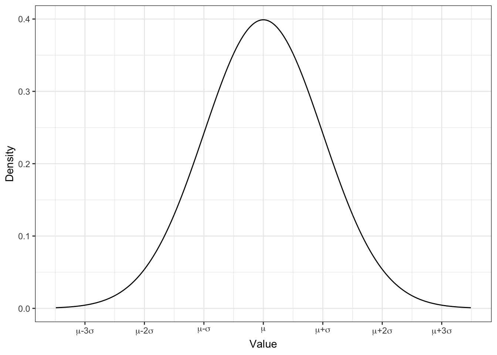
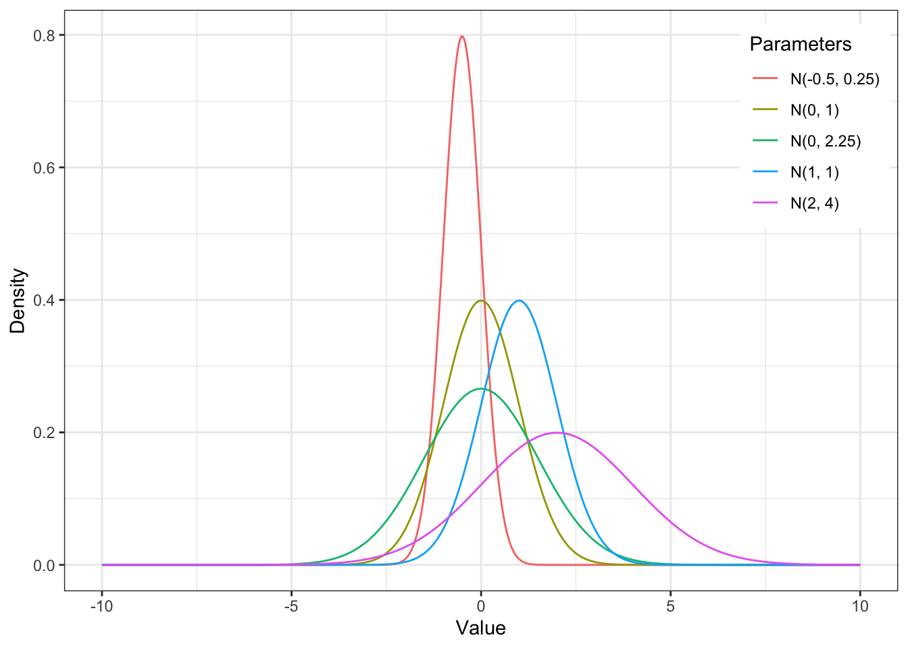
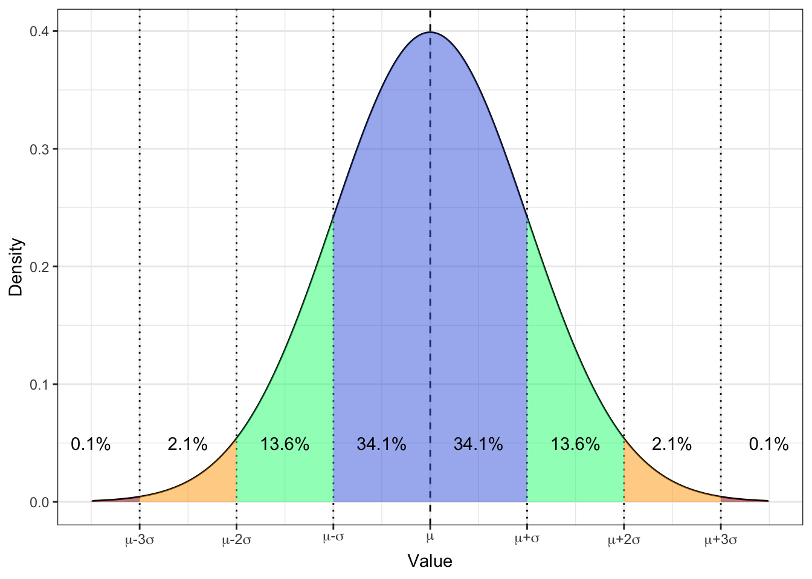

5 Нормальное распределение
Мы научились описывать эмпирическое распределение переменных — то есть распределение, которое получено на выборке. Но ведь в генеральной совокупности наши переменные тоже каким-то образом распределены! Уделим внимание и этому вопросу.
5.1 Распределение признаков в генеральной совокупности
Можем ли мы знать наверняка, как распределен признак в генеральной совокупности? Нет. Однако мы можем предполагать некоторое теоретическое распределение признака. На основе чего мы можем сделать такое предположение? Конечно же, на основе собранных данных, то есть на основании выборки. Большой выборки. Очень большой выборки. Большого количества очень больших выборок.
Теоретических распределений существует много — и они разные по форме, по параметрам, которыми они описываются, по величинам, которые ими можно описывать и т.д. Однако есть одно распределение, которое стало невероятно популярным и крайне широко используемым — нормальное распределение. Его мы и будем рассматривать.
5.2 Нормальное распределение
Тот факт, что некоторая величина распределена согласно закону нормального распределения, записывается следующим образом:
\[ X \sim \mathcal{N}(\mu, \, \sigma^2) \]
Здесь \(X\) — некоторая случайная величина, \(\mathcal{N}\) — обозначение нормального распределения, \(\mu\) и \(\sigma^2\) — параметры нормального распределения.
5.2.1 Параметры нормального распределения
Итак, в скобках указаны параметры распределения — как можно видеть, их всего два. На самом деле, мы их уже хорошо знаем: \(\mu\) — это не что иное, как среднее, а \(\sigma^2\) — дисперсия. Эти два параметра входят в формулу, описывающую график функции плотности вероятности нормального распределения:
\[ \frac{1}{\sigma \sqrt{2 \pi}}e^{-\frac{(x - \mu)^2}{2\sigma^2}} \\ x \in \mathbb{R}, \quad \mu \in \mathbb{R}, \quad \sigma \in \mathbb{R}_{>0} \]
А сам график выглядит вот так:

И мы его уже тоже много раз видели.
5.2.2 Почему все так любят нормальное распределение?
- Его очень давно знают. Карл Фридрих Гаусс (1777–1855) исчерпывающе его исследовал, и теперь про это распределение известно всё. И ещё чуть более.
- Ряд статистических методов, называемых параметрическими, требуют, чтобы распределение изучаемых переменных подчинялось нормальному закону.
- Сейчас, строго говоря, это уже не совсем так. Появляются новые исследования и симуляции, показывающие, что это не ключевое требование, однако актуальность нормального распределения от этого не гаснет.
- С помощью нормального распределения определяют статистические нормы. Например, в образовательном тестировании, психодиагностике или иногда клинической практике.
- На основании нормального распределения рассчитывается стандартная ошибка среднего — важная оценка в статистике.
- На основании нормального распределения, а точнее — стандартной ошибки — рассчитываются доверительные интервалы среднего — одна из ключевых оценок в статистике.
5.3 Форма нормального распределения и параметры
Очевидно, что раз у распределения есть какие-то параметры, значит они каким-то образом на него влияют. Не менее очевидно, что среднее \(\mu\) будет задавать положение центра колокола на оси \(x\), а дисперсия \(\sigma^2\) — ширину колокола. Ниже представлены несколько нормальных распределений в различными параметрами:

5.4 Стандартные отклонения и вероятности
Какиуже упоминалось выше, нормальное распределение изучено вдоль и поперек. В том числе, посчитаны вероятности попадания значений в определенные и интервалы. Вот они:

Конкретно с этими вероятностями мы работаем реже — полезнее оказывается знать следующие:
- \(\mathrm{P} \big( X \in (\mu - \sigma, \, \mu + \sigma) \big) = 68.2\%\)
- \(\mathrm{P} \big( X \in (\mu - 2\sigma, \, \mu + 2\sigma) \big) = 95.6\%\)
- \(\mathrm{P} \big( X \in (\mu - 3\sigma, \, \mu + 3\sigma) \big) = 99.8\%\)
То есть
- в пределах одного стандартного отклонения от среднего значения лежит почти 70% значений — это очень частотные значения;
- в пределах двух стандартных отклонений от среднего значения лежит 95% значений — бо́льшая часть выборки;
- в пределах трех стандартных отклонений от среднего значения лежит практически 100% выборки — то есть вся выборка.
Что нам это дает?
Во-первых, еще один способ определения выбросов (нехарактерных значений). Например, так как за границы двух стандартных отклонений попадает всего 5% значений, мы можем считать, что эти значения — нехарактерные и назвать и выбросами. Либо же можем быть более либеральными и сказать, что выбросы для нас — значения, которые выходят за пределы трех стандартных отклонений. Главное обосновать, почему мы так считаем.
Во-вторых, так мы можем определять статистические нормы. Например, мы разрабатываем клинический опросник (типа MMPI какого-нибудь), и нам надо выяснить, какие значения на шкалах итогового балла будут являться «нормой», а какие «патологией». Мы собираем огромную выборку (скажем, по России или по странам СНГ), строим распределение итогового балла по каждой из шкал опросника, и определяем границы нормы — пусть это будет \(\mu \pm 3\sigma\). Теперь, когда новый респондент пройдет наш опросник, мы сможем сказать относительно его тестового балла, соответствует ли он нормативным границам или не соответствует.
Отмечу еще раз: здесь мы говорим только о статистической норме — о таких значениях / показателях, которые чаще всего встречаются в выборке. Это только один из возможных вариантов определения нормы.
В целом, это всё, что нам надо знать про нормальное распределение.